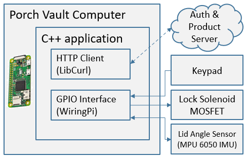
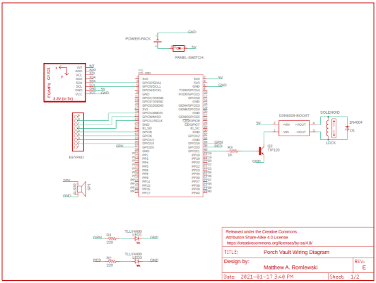
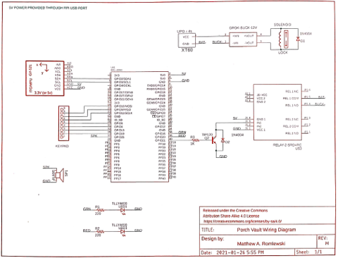

Overview
PorchVault’s electrical design is centered around a Raspberry Pi Zero-w, which is equipped with Wifi and general purpose inputs/outputs (GPIO). This made it simple to integrate any peripheral devices needed and connect to the pin validation server.

Initial Designs
Integrating the keypad, inertial measurement unit (IMU), speaker, and LEDs was as simple as planning in wiring buses and resistors to their GPIO pins, whether it be I2C or digital IO pins.
The larger challenge was actuating the lock solenoid. The initial design, as seen below, was to use a 5-volt power bank with a sufficient capacity and current limit. This would would allow for a simpler design with a single battery to keep charged. the solenoid lock would be connected to a step-up DC-DC converter, boosting the power bank’s 5V signal to 12V. In practice however, when the transistor switch was closed and power could flow through the boost converter, problems occurred on both sides. The Raspberry Pi’s own 5V rail dropped below a critical level which could have corrupted its software, and the lock would not boost to the required voltage.

Electrical Redesign
To work around this problem, it was decided to switch to using a step-down converter over a step-up. Additionally, the Raspberry Pi and the solenoid would each have their own power source. The Pi would continue using the 5V power bank while the lock would use an auxiliary battery. For cost and convenience, a 4-cell lithium-polymer battery was used, and the aforementioned step-down converter acted as a 12-volt regulator since the nominal voltage of the LiPo is around 15-16V.
To actuate the lock, a relay was used. The relay acts allowed the Pi to treat the solenoid like a ‘black box’, where it only needed to send a binary signal to control its behaviour. The relay was normally-open, and closed its connection when its control pin was pulled to ground. From the perspective of the Pi, this means that the relay would act as a load, where the relay is drawing current from the Pi’s 5V rail and sinking it through one of the Pi’s GPIO pins, configured to be a push-pull pin. The current draw of the relay was likely higher than the current rating of the GPIO pin, putting it at risk. To solve this, the transistor switch was designed such that the Pi only needed to output a digital-HI signal and the BJT would sink all of the current needed.
To protect the transistor from potential voltage spikes whendisconnecting the inductive load (solenoid), a flywheel diode was added.
